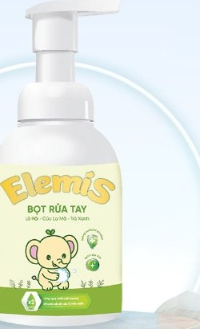
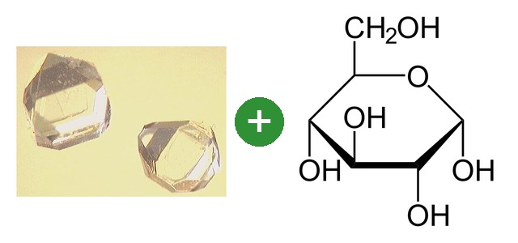

BỌT RỬA TAY ELEMIS

Chai 250ml245.000đ
Bé từ 6 thángGIẢI QUYẾT VẤN ĐỀ GÌ CHO BÉ
Da tay khô rát do rửa tay nhiều
THÀNH PHẦN → GIÚP GÌ CHO BÉ
Chất tạo bọt dịu gốc dầu dừa (cocamidopropyl betaine)
Sạch tay mà không khô tay. Bọt kéo dầu mỡ, bụi bẩn khỏi tay rồi trôi theo nước; dịu hơn xà phòng nên không lấy đi quá nhiều dầu tự nhiên của da tay bé.


Sả chanh, trà xanh
Hỗ trợ giảm vi khuẩn còn lại trên tay.
Lô hội, cúc la mã
Tay rửa nhiều lần không bị rát đỏ — làm dịu da ngay trong lúc rửa.

Glycerin, Aquaxyl, lô hội
Rửa xong tay vẫn mềm. Glycerin giữ nước trên bề mặt; Aquaxyl giúp da tự giữ nước bên trong; lô hội tạo lớp gel mỏng giữ nước.
★ ĐIỂM MẠNH KHI KHÁCH SO SÁNH
Điểm mạnh: dạng bọt, bé tự bơm, tự rửa; có Aquaxyl – glycerin – lô hội giữ ẩm → rửa nhiều lần trong ngày tay không khô.
So với Chicco 0M+: Chicco cũng dịu, có trà xanh, cúc la mã (giống Elemis). Elemis có thêm Aquaxyl và lô hội — Chicco không liệt kê.
Nói với khách: “Bé đi học rửa tay nhiều nên tay khô. Bọt rửa tay này có thêm chất giữ ẩm, rửa xong tay không bị ráp.”
Lưu ý: giá cao hơn Chicco (245.000đ so với khoảng 150.000đ, cùng 250ml); Elemis dùng cho bé từ 6 tháng, Chicco dùng từ sơ sinh. Không nói “kháng khuẩn mạnh hơn” vì chưa có số liệu so sánh.
CÁCH DÙNG: ⏳ Hướng dẫn chi tiết chưa có trên tài liệu gốc — làm theo nhãn sản phẩm.
TỪ BỌT RỬA TAY ELEMIS → COMBO THEO VẤN ĐỀ DA
Khách hỏi mua Bọt rửa tay Elemis → hỏi thêm vấn đề của bé → gợi ý combo đúng vấn đề đó.
1Da tay khô rát do rửa tay nhiều
Hỏi: “Bé đi lớp rồi phải không chị? Tay bé có bị khô ráp không?”
+
Cả bộ 360.000đ
- Bọt rửa tay Elemis: Sạch tay mà không khô tay; lô hội, cúc la mã làm dịu ngay khi rửa; Aquaxyl, glycerin giữ ẩm.
- Kem bôi Elemis: Mu bàn tay đã nứt: rau má giúp chỗ nứt mau liền; Aquaxyl giữ ẩm — thoa trước khi đi ngủ.
“Rửa tay nhiều thì mẹ đổi sang bọt rửa tay có chất giữ ẩm để tay không khô thêm; chỗ nào đã nứt thì tối thoa kem cho mau lành.”
Cách dùng: Bọt: dùng mỗi lần rửa tay. Kem: lớp mỏng lên mu bàn tay sau khi rửa, nhất là trước khi đi ngủ.
Bọt rửa tay dành cho bé từ 6 tháng.
⚠ Khuyên đi khám khi: Tay nứt sâu chảy máu, hoặc nổi mụn nước ngứa nhiều.
Sell-out kit theo sản phẩm · Công ty TNHH Dược Khoa Xanh · Giá OTC 01/04/2025